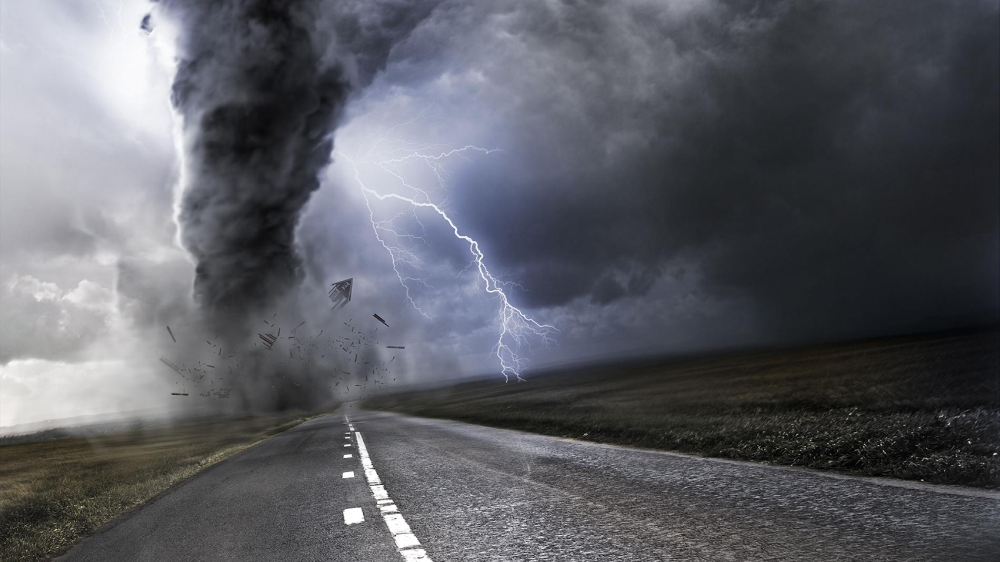

Disasters-A Cry For Help
Nov 11, 2018

Disaster management
Disaster management is the creation of primary and secondary plans through which people’s vulnerability to hazards can be reduced so that they can cope up with disasters. The mechanism does not avert or eliminate the threats; instead, it focuses on creating the strategies to decrease the effect of disasters.
Disaster management in India
National disaster management authority (NDMA) is the apex body which is mandated to lay down the policies and guidelines for disaster management to ensure timely an effective response towards disasters. A separate fund called as “national disaster management fund” (NDMF) is also there for exclusive mitigation.
NDMA mostly performs the following functions:
• Administration
• Policies formation for disaster management
• Mitigation of disasters
• Approval of the plans laid down
• Formation of funds for the purpose of mitigation of disasters etc
• Running various programs and imparting guidelines
Prevention & control
The natural disasters are inevitable, even if we have measures to predict/ forecast the disasters we can’t stop them from happening. The best which can be done is to avoid the practices which are hazardous for the environment which are leading towards
environmental degradation, while preparing plans for our disaster management.
Once a disaster strikes it leads to a massive destruction and loss of life. In case of the disasters like earthquakes, floods etc. Where a number of humans are displaced and post disaster there are a number of causalities. This is the time when the actual emergency preparedness comes into effect by giving first aid to the injured ones, providing rescue and relief operations to the victims.
The impact of human activities on natural disasters:
Since a long for now, it has been noticed that modernization is leading to grave ignorance towards the environment. Environmental bylaws are being neglected by industries. Due to over-exploitation of nature, we humans have created such a situation where events like earthquakes, landslides are increasingly being elevated to the extent that they are causing massive loss in terms of human life and property.
It’s not that, every one of us is being ignorant about the environment. There are a lot of people who are very much concerned about the nature and the environment. Even, there are many NGOs which are taking the issue of global warming and pollution publically by taking out rallies and organizing several campaigns to save environment and such initiatives need to be appreciated.
Our Team

Arshpreet Singh
Herumb Shandilya
Vatsal Agarwal
follow us